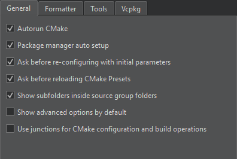

CMake Build Configuration
Specify build settings for the selected kit in Projects > Build & Run > Build > Build Settings.
Configuring medium-sized to large CMake projects in Qt Creator can be a challenge due to the number of variables that you need to pass to CMake to configure the project correctly. To make this easier, Qt Creator creates an initial configuration for you based on the kit settings and displays it in Initial Configuration in the Build Settings of the project. Or, you can use CMake presets to configure CMake.
The Configure field displays the effective CMake call that Qt Creator constructs using the values of the Build directory and Build type fields.

You can specify additional CMake options, such as --find-debug, --trace-expand, or --warn-uninitialized, in Additional CMake options. For more information about the options, click the link in the field name or see CMake: cmake(1).
Select Kit Configuration to edit the CMake settings for the build and run kit selected for the project.
You can use CMake presets files to specify common configure, build, and test options and share them with others.
Initial Configuration
Initial Configuration lists the variables that Qt Creator uses to configure the CMake project for the first time. It shows the default values that come from the kit's CMake configuration in italics. Qt Creator saves the initial configuration list of variables in the project's source directory as the CMakeLists.txt.user file.
Current Configuration
Current Configuration lists the CMake variables in the cmake-file-api JSON export in the .cmake/api/v1/reply directory. It shows the variables that come from the initial configuration in italics and mismatched values in red.
After selecting the Run CMake button, you can view and change the actual values of the variables that Qt Creator passes to CMake. The Key column lists variable names, and the Value column lists their current values. For more information about the variables, select Help in the context menu or see CMake: cmake-variables(7). For more information about Qt-specific variables, see CMake Variable Reference.
Multi-Config Support
Qt Creator supports Multi-config generators, such as Xcode, Visual Studio, and Ninja Multi-Config. This means that you need to configure CMake only once, have only one build directory, and can switch between build types faster.
However, this means that Qt Creator can no longer simply parse the first CMake file-api JSON export. Therefore, the value of the Build type field must match that of the CMAKE_BUILD_TYPE variable for the single configuration generators (Ninja, Makefile) to determine, which generator to use.
When developing with Qt 6 for iOS, only the Xcode generator is supported.
Modifying Variable Values
You can view and edit the actual values of the variables that are passed to CMake in Initial Configuration or Current Configuration.
You can select several variables and apply an action to them. To clear the selection, click anywhere in the view.
To batch edit variable values, select Batch Edit.
To build using the current configuration, select Run CMake. While building, the button text changes to Stop CMake. Select the button to cancel the current build.
Adding Variables
To add variables, select Add, and then select the type of the variable that you are adding: Boolean, String, Directory, or File.
To change the type of the selected variable, right-click the variable name in the Key column, and then select Force to bool, Force to file, Force to directory, or Force to string in the context menu.
To copy the name or value of the selected variable to the clipboard, select Copy in the context menu.
Changing Variable Values
To change the value of a variable, double-click it, or select it, and then select Edit. If the initial, current, and kit configuration get out of sync, select Apply Kit Value or Apply Initial Configuration Value in the context menu in Initial Configuration or Current Configuration.
To reset all the changes that you made, select Reset.
The variable values that you change are passed via -D<option>=<value> to CMake, which stores the options in the CMakeCache.txt file. This means that if you remove the build directory, all the custom variables that are not part of the initial CMake configuration are also removed.
To reconfigure a project using the changed variable values, select Build > Clear CMake Configuration, which removes the CMakeCache.txt file. This enables you to do a full rebuild.
Removing Variables
To remove the selected variables, select Unset. To undo the removal, select Set.
Viewing Advanced Variables
To view all variables, select the Advanced check box.
To view all variables by default, go to Preferences > CMake > General and select Show advanced options by default.

Re-configuring with Initial Variables
To reset CMake variables to the initial ones, select Re-configure with Initial Variables in Initial Configuration. Qt Creator deletes the current CMake configuration and runs CMake. The initial configuration values are stored in the CMakeLists.txt.user file, so deleting a build directory does not delete the initial configuration.
To be asked before Qt Creator resets the changes, go to Preferences > CMake > General and select Ask before re-configuring with initial parameters.
Viewing CMake Output
Output from CMake is displayed next to the Build Settings and Run Settings panes in the Projects mode.
To clear the search results, select the  (Clear) button.
(Clear) button.
You can enter a string in the Filter field to filter output. To specify filtering options, select the  button. You can filter output by using regular expressions or case-sensitivity. Select Show Non-matching Lines to hide the lines that match the filter.
button. You can filter output by using regular expressions or case-sensitivity. Select Show Non-matching Lines to hide the lines that match the filter.
Press Ctrl+F to search for a string in the output.
To increase or decrease the output text size, select  (Zoom In) or
(Zoom In) or  (Zoom Out), or press Ctrl++ or Ctrl+-.
(Zoom Out), or press Ctrl++ or Ctrl+-.
To hide the output, select the  (Hide Right Sidebar) button or press Alt+Shift+0.
(Hide Right Sidebar) button or press Alt+Shift+0.
CLICOLOR_FORCE Environment Variable
Qt Creator sets the environment variable CLICOLOR_FORCE to 1 to show ANSI-colored output for CMake. This might affect the process output.
If the output looks incorrect or different from earlier Qt Creator versions, try setting CLICOLOR_FORCE to 0 in Use Build Environment.
Using Junction Points on Windows
To overcome issues with long paths on Windows, create and use junction points for the source and build directories. At a junction point, a directory serves as an alias to another directory on the computer.
To use the junction points for CMake configure, build, and install operations, go to Preferences > CMake > General and select Use junctions for CMake configuration and build operations.
Qt Creator stores junction points in C:\ProgramData\QtCreator\Links. To use another path, set it as the value of the QTC_CMAKE_JUNCTIONS_DIR environment variable.
Set the QTC_CMAKE_JUNCTIONS_HASH_LENGTH environment variable to shorten the MD5 hash key length from the default length value of 32.
CMake Build Steps
Qt Creator builds CMake projects by running cmake . --build, which then runs the CMake generator specified in the project configuration: make, mingw32-make, nmake, or ninja, for example. The CMake generator produces project files for Qt Creator. Multi-config generators are also supported.
You can add arguments to pass to CMake and the generator and targets for the build command in Build Steps.
Note: While the other CMake generators are installed together with Qt, you usually need to install Ninja yourself.
To install the application to a staging directory when cross-compiling, select the Stage for installation check box and specify the path to a directory in the Staging directory field. The packaging tool constructs the package from the contents of the directory.
Using Ninja as a CMake Generator
To use Ninja with CMake, you must install it and select it as the CMake generator in the build and run kit:
- Install Ninja.
- Add the path to the Ninja executable to the value of the PATH system variable.
- In Projects > Build & Run > Build > Build Settings, select Kit Configuration.
- Select Change next to the CMake generator field to open the CMake Generator dialog.
- In Generator, select Ninja.
- Select OK to save your changes and close the dialog.
- Select Close to close the Kit CMake Configuration dialog and return to Build Settings.
Note: To make sure that old build artifacts don't get in the way the first time you build the project after the change, select Build > Rebuild Project. This cleans up the build directory and performs a new build.
Using CMake with Package Managers
To automatically set up the Conan or vcpkg package manager for use with CMake:
- Create a CMake script file that installs dependencies from a
conanfile.txt,conanfile.py, orvcpkg.jsonfile in the project source directory. - Set the path to the script as the value of the
CMAKE_PROJECT_INCLUDE_BEFOREvariable. - Go to Preferences > CMake > General and select Package manager auto setup.
QTC_RUN Environment Variable
Qt Creator sets the environment variable QTC_RUN to 1 when executing the cmake process.
This enables the CMake code to detect if it's being executed from Qt Creator.
CMake Clean Steps
When building with CMake, you can add arguments to pass to CMake and the generator and targets for the clean command in Clean Steps.
The build errors and warnings are parsed and displayed in Issues.
See also Activate kits for a project, Add custom output parsers, Configure projects for building, Configure projects for running, How To: Build with CMake, Open projects, and CMake.